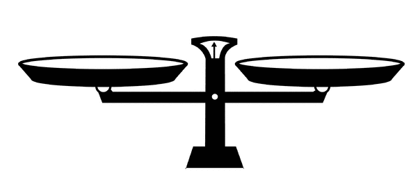
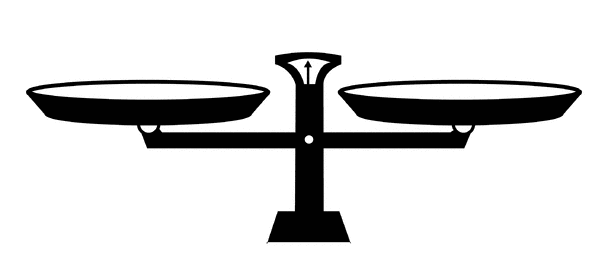

California Proposition 66, Death Penalty Procedures (2016)
On November 8th 2016, California will be holding a ballot vote, to decide in whether to change or abolish the current death penalty system. California allows courts to sentence the convicted the death, by lethal injection. That method can be very expensive, and it can be quite hard to prove who's guilty. Two Propositions want change on this subject, 66, and 62. Prop 66 states that California needs to change the death penalty system. Prop 62, another death penalty proposition wants to abolish the death penalty system all together,
Proposition 62 and 66
What are propositions?
Propositions are certain ideas or arguments about a current law or establishment. 300,000 signatures are recquired before it is put on the ballot. Proposition 66 and 62 have not been the first votes about the death penalty. Proposition 7, in 1978 reinstated the California death penalty. Proposition 34, in 2012 was a vote to ban capital punishment, but got rejected by voters.
What does Prop 66 plan to accomplish?
Proposition 66 wants to alter, not abolish the death penalty system. Currently, California uses the lethal injection method, which is seen as a humane way of execution, but it can cost a lot of money. Taxpayers believe that changing the drugs, or just acquiring a whole new system, would be much lest costly, and more benefitial to California.
A Yes vote means that you believe that California's system needs to be changed.
A No vote inquires that you do not think the death penalty needs to be changed.
Prop 62 is also about the death penalty. A Yes vote, declines California to use execution methods (death penalty), and a No vote supports the execution vote.
Two states will be deciding on whether to keep the death penalty. Nebraska will also being doing a reformation vote for the death penalty, but the polls are high for it to stay.

State death penalty facts
- The first state to suceed from the death penalty, was Michigan, in 1841, who banned the use of hanging by neck.
- 76%~ of the U.S states have legalized the death penalty, (including California).
- The most recent State to abolish the death penalty was New Mexico, in March 2009.
- The current polls for the California Death Penalty vote is 59% for No (62) and 41% for Yes (66)
- Scale picture: http://www.clipartkid.com/images/5/balance-scale-clip-art-clipart-best-JwEI4m-clipart.gif
- Yes on Prop 66 and 62: https://noprop62yesprop66.com/wp-content/uploads/No62Yes66.png
- Map and State procedures picture: https://ballotpedia.org/California_Proposition_66,_Death_Penalty_Procedures_(2016)
California's death penalty system today
Many voters feel that the California Death Penalty system is broken, and unbalanced. Some prisoners sentenced can often live their entire life without being trialed. Particular methods, like the lethal injection, can cost a lot of money.Cases without the death penalty cost $740,000 to keep in prison, while cases where the death penalty is sought cost $1.26 million. Maintaining each death row prisoner costs taxpayers $90,000 more per year than a prisoner in general population. In a 2016 test, there were more than 7000 inmates on the list to be trialed. Some have been on there for decades without notice.
| Proposition 62 | Proposition 66 |
|---|---|
| Will abolish the death penalty system in California if passed. | Will change the death penalty methods and prices, to fix the system. |
| Replace the death penalty system, and recquire all of the convicted, in prison for life, safe from execution. | Would shorten the list of convicted in prison for life, and to remain on the execution list. |
| Would try to reduce the amount of money spent on the convicted in prison. | Place all required prisoners on death row to work while in prison and pay restitution to victims' families. |